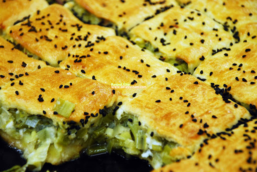
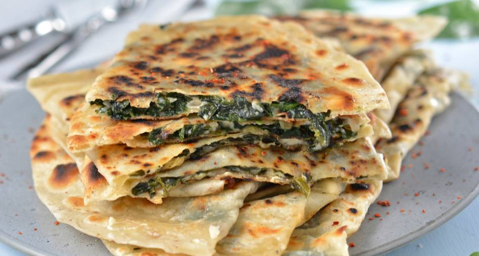

.png)
ISTANBUL
Istanbul: Métropole à cheval entre l'Europe et l'Asie, carrefour des routes continentales et maritimes, l'histoire a façonné le destin de cette ville aux deux empires (empire byzantin et ottoman), comme le prouvent les différents toponymes qui ont été attribués à cette ville aux trois noms, Byzance, Constantinople et Istanbul qui unissent l'antiquité gréco-romaine, le christianisme grec médiéval et la fascination musulmane
LES GOÛTS
- Borek, une collation turque sur le pouce De loin mon plat typique salé préféré de ma visite à Istanbul, le borek est présenté de nombreuses façons. Parfois, ses nombreuses couches de pâte filo sont remplies de fromage, de patates ou d’épinards et il y a même des versions à la viande. Chaud, croustillant et moelleux au milieu, une parfaite collation d’après-midi ou un complément à un copieux repas à manger à Istanbul en déambulant dans ses rues bondées!
- 
- Balik ekmek, sandwich au poisson sur les rives du Bosphore Découvert au hasard, ce petit sandwich au poisson se trouve facilement en bordure du Bosphore, un lieu à voir absolument dans la grande ville. Il est devenu controversé, car plusieurs marchands utilisent du poisson congelé de piètre qualité qui ne provient même pas de Turquie. Le balik ekmek est toutefois vraiment délicieux lorsque fraîchement préparé et se mange bien en admirant les bateaux passer!

ANTALYA
La vieille ville lycienne de Phaselis, un vieux port, était autrefois un endroit important en ce qui concerne le commerce de la région. Aujourd'hui, vous pouvez vous promener autour des restes de la ville et observer les vestiges, comme un aqueduc, un amphithéâtre et la rue principale du marché, qui relie deux ports.
-
Gozleme
Antalya est une destination populaire pour l'alimentation de rue. En plus du kebab classique, il est possible de commander dans l'un des nombreux kiosques de la zone a gozleme, c'est une sorte de crêpe salée cuite sur le gril et servie avec une généreuse garniture d'épinards, de fromage, de pommes de terre ou même de viande hachée - 
-
Soupe Paça
Cela pourrait susciter un peu de dégoût, car pour faire cette soupe, nous utilisons des ingrédients qui sont tout simplement atypiques. Là soupe de paça exploite les parties les plus "absurdes" du mouton, comme la tête, le cerveau et même les cuisses, cuites en bouillon. Malgré les locaux peu appétissants, les locaux garantissent les bienfaits de ce plat chaud, également utilisé comme remède contre la gueule de bois. 
NEVSEHIR
Nevşehir est une ville de Turquie, capitale de district de la province du même nom. Située en Cappadoce, la ville conserve de nombreux habitats troglodytiques. L'ancienne ville souterraine de Kaymaklı située à une vingtaine de kilomètres au sud de Nevşehir est la plus remarquable (avec Derinkuyu) des cinq cités souterraines ouvertes au public en Cappadoce. Creusée dans le tuf friable d'une colline par les Hittites vers 1500 av. J.-C., elle a grandi au fil des siècles, comptant désormais des kilomètres de galeries.
-
Testi kebab
Gastronomie en Cappadoce Les pots sont fabriqués en Cappadoce depuis des siècles. Le Testi kebab, l’un des plats les plus délicieux, se mélange au goût de ces pots en terre cuite. Le goût de la viande, qui est également cuit, restera dans votre palais de façon mémorable. Le délicieux Testi kebab mélange agneau, ail, oignon et tomate et en le faisant cuire à feu doux pendant deux heures. La présentation de la nourriture est tout aussi intéressante. Lorsque le pot est rompu, la délicieuse odeur de la nourriture fait saliver. 
-
Dügün Soupe
Le dügün est une soupe faite à partir de boulgour fin. Faites griller le beurre parfumé et la pâte de tomates spécifiques à la Cappadoce, ajoutez de l’eau et ajoutez le mélange quand cela commence à bouillir. C’est une saveur délicieuse qui vous réchauffera. 
Mots et phrases à apprendre en Turc pour voyager
– « Günaydın » / « İyi günler » : Bonjour
– « Merhaba » : Salut
– «İyi akşamlar » : Bonsoir
– « İyi geceler » : Bonne nuit
– « Görüşürüz » : Au revoir
– « Nasılsın, nasılsınız? » : Comment vas-tu ?
– «İyiyim » : Je vais bien
– « Ya sen? » / « Ya siz? » : Et toi ? / Et vous ?
– « Evet » / « hayır » : Oui / Non
– « Belki » : Peut-être
– «Lütfen » : S’il vous plait / S’il te plait
– « Teşekkür ederim » :Merci
– « Memnuniyetle » : De rien
– « Benim … adım » : Je m’appelle…
– « Ben … yaşındayım » : J’ai… ans
– « Üzgünüm » : Je suis désolé
– «Türkçe / İngilizce biliyor musunuz? » : Parlez-vous anglais/turc ?
– «Bana yardımcı olabilir misiniz? » : Pouvez-vous m’aider ?
– «Anlamıyorum » : Je ne comprends pas
– « …nerede? » : Où est… ?
– «Bunun fiatı ne ? » : Combien ça coûte ?